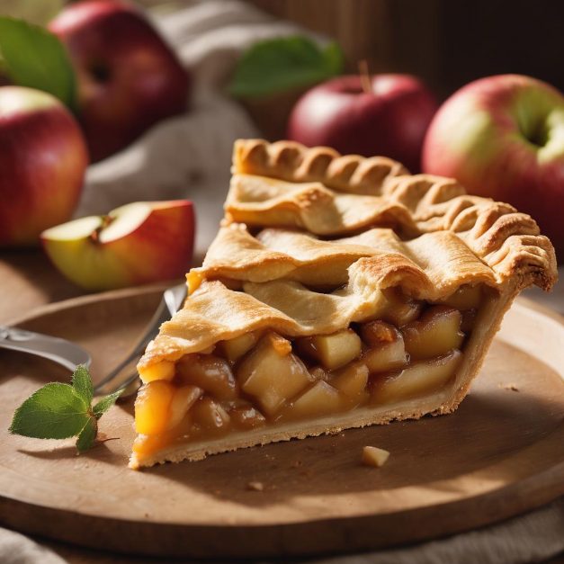

Apple Pie

Description
Indulge in the timeless comfort of our Apple Pie, a delectable creation that captures the essence of home-baked goodness. Immerse yourself in the sweet symphony of freshly peeled and sliced apples, harmoniously mingling with the warmth of cinnamon, nutmeg, and a hint of citrusy brightness from lemon juice. Encased in a flaky, golden pie crust and topped with a delicate sprinkle of sugar, each bite unveils a perfect balance of sweetness and spice, creating a nostalgic journey reminiscent of Grandma's kitchen.
Crafted with love and precision, our Apple Pie is an irresistible treat that beckons with the aroma of warm spices and the promise of pure delight. Whether shared at family gatherings or savored as a solo indulgence, this classic dessert is a celebration of simple pleasures, inviting you to savor the comforting embrace of a time-honored recipe that transcends generations.
Ingredients
- 6 cups peeled, cored, and sliced apples (such as Granny Smith)
- 3/4 cup granulated sugar
- 1/4 cup packed brown sugar
- 1 teaspoon ground cinnamon
- 1/4 teaspoon ground nutmeg
- 1 tablespoon lemon juice
- 2 tablespoons all-purpose flour
- 1 package (14 ounces) refrigerated pie crusts (or homemade)
- 1 tablespoon butter, cut into small pieces
- 1 egg, beaten (for egg wash)
- 1 tablespoon granulated sugar (for sprinkling)
Steps
- Preheat Oven: Preheat your oven to 425°F (220°C).
- Prepare Apples: In a large bowl, combine sliced apples, granulated sugar, brown
sugar, cinnamon, nutmeg, lemon juice, and flour. Toss until the apples are evenly coated.
- Roll Out Pie Crust: Roll out one pie crust and place it in a 9-inch pie dish. Trim
the excess crust from the edges.
- Add Apple Filling: Pour the apple mixture into the pie crust, spreading it
evenly. Dot the top with small pieces of butter.
- Top with Second Crust: Roll out the second pie crust and place it over the apple
filling. Trim and crimp the edges to seal the pie. Cut a few slits on the top crust to allow
steam to escape.
- Brush with Egg Wash: Brush the top crust with the beaten egg and sprinkle with
granulated sugar.
- Bake: Bake in the preheated oven for 45-50 minutes or until the crust is
golden brown and the filling is bubbly. If the edges start to brown too quickly, you can
cover them with foil.
- Cool and Serve: Allow the apple pie to cool for at least 2 hours before
serving. Serve it with a scoop of vanilla ice cream if desired.